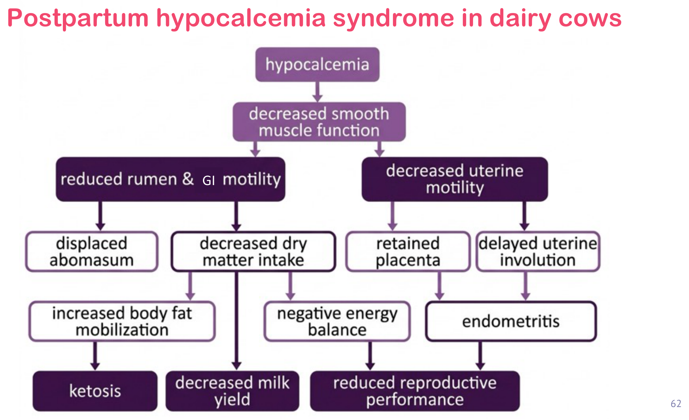

重點摘要
這頁接續姊妹篇〈乳牛營養與飼養管理〉，聚焦在乳牛生涯中風險最集中的一段時間——轉換期（transition period，產前後各21天）。這段期間牛隻從乾乳（不泌乳）狀態切換到泌乳狀態，同時要應付分娩、初乳合成、大量鈣質需求，任何一個環節銜接不順，就容易誘發低血鈣症（hypocalcemia／milk fever）——而低血鈣不是單一疾病，它會透過平滑肌功能下降這條路徑，同時牽連皺胃移位、酮症、胎衣滯留、子宮內膜炎等一整組「產後代謝病」，這正是這頁的核心，我也推測是反芻動物疾病學國考申論題偏好出的整合型考點。最後帶到DCAD（陰陽離子差）這個預防低血鈣的日糧設計工具，把「怎麼吃」跟「怎麼預防病」串起來。
轉換期定義，推測國考中頻
飼養原則，推測國考高頻
連鎖病變，推測國考最高頻
公式與機轉，推測國考高頻
※ 「推測國考熱點」是我依內容特性（有明確數字、能串成機轉整合題）做的個人判斷，沒有實際核對過歷屆考古題，僅供參考、不是驗證過的事實，讀的時候請自行斟酌權重。
- 轉換期＝產前21天到產後21天，是牛隻生理狀態從乾乳切換到泌乳的關鍵過渡期，也是代謝病集中好發的時間窗，飼養管理上最容易被牧場忽略。
- 乾乳期分「far-off」與「close-up」兩階段：早期高纖低能，晚期（close-up）改高能低纖，並給予4–5kg精料（CP 15–16%），目的是讓瘤胃乳突與菌相提前適應泌乳期的高精料飲食。
- Close-up期DMI會下降30–40%，但同一時間胎兒營養需求正達高峰、母牛免疫力開始下降——這個「需求上升、攝取下降」的落差是轉換期代謝病的根本背景。
- 低血鈣症的核心機轉是平滑肌功能下降，會同時影響瘤胃腸胃道平滑肌（→DA、DMI下降、酮症）與子宮平滑肌（→胎衣滯留、子宮復舊延遲、子宮內膜炎）——這張連鎖圖是整堂課、甚至整個反芻動物疾病學最重要的一張圖。
- DCAD公式：(Na⁺+K⁺)－(Cl⁻+S²⁻)，負值飲食可輕度酸化血液、刺激骨鈣動員，是close-up期預防低血鈣最重要的日糧設計工具。
泌乳分期與轉換期定義
先建立時間軸的共同語言，後面談管理原則與疾病機轉時才不會搞混「乾乳期」跟「轉換期」的範圍差異。
Lactation
Dry period・45–60天
Parturition
Lactation
轉換期（transition period）定義為產前21天到產後21天，涵蓋乾乳期末段與泌乳初期，是牛隻生理狀態從乾乳切換到泌乳的過渡階段。牧場常見的管理盲點是：因為轉換期的牛還沒開始（或剛結束）泌乳、暫時不產生直接經濟效益，容易被視為「不需要特別關注」的一群，但這正是代謝病與生殖疾病最集中好發的時間窗。
乾乳期飼養管理重要
乾乳期不是「讓牛休息」這麼簡單，這段時間的飼養設計直接決定了下一個泌乳期能不能順利開局。
乾乳期的三大生理目標
Mammary gland repair and regeneration
Meeting rapid fetal development demands
Colostrum synthesis
理想乾乳期長度為45–60天。這段時間也讓牛隻得以調整體況（body condition），累積體脂肪以因應產後泌乳初期的負能量平衡（negative energy balance）。
Far-off vs. Close-up：兩階段飼養原則重要
| 階段 | 飼養原則 |
|---|---|
| 早期乾乳 Far-off | 高纖維、低能量日糧 |
| 晚期乾乳（近產期） Close-up | 提高能量、降低纖維比例；額外給予4–5kg精料（粗蛋白15–16%），目的是讓瘤胃乳突與菌相提前適應即將到來的泌乳期高精料日糧，降低泌乳初期瘤胃適應不良的風險 |
產前最後三週（close-up dry period），母牛免疫功能開始下降；此時胎兒營養需求正達高峰，但母牛自身DMI卻下降30–40%——這個「需求上升、攝取下降」的生理矛盾，是轉換期代謝病好發的根本背景，因此這段期間盡量維持DMI是管理上的關鍵目標。
低血鈣症 Hypocalcemia / Milk Fever重要
這是全頁、甚至可能是整個反芻動物疾病學科目最重要的一張圖——低血鈣不是單一問題，而是一個會連鎖引發多種產後疾病的樞紐。
低血鈣症（hypocalcemia／milk fever）是乳牛常見的代謝性疾病，特徵是血鈣濃度過低，可表現為臨床型與亞臨床型兩種型態，嚴重影響牛隻在轉換期這個最脆弱階段的健康。分娩後，乳牛需要大量鈣質（初乳與乳汁合成所需），牛隻會先從血液中動員鈣，接著動用飲食與骨骼儲備；若無法動員足夠的鈣，患牛會無法正常站立或行走、食慾下降，最終導致整體健康與泌乳表現惡化。
產後低血鈣症候群：完整連鎖病變圖重要

臨床上遇到一隻產後牛同時出現皺胃移位＋酮症＋胎衣滯留，不要把它們當成三個獨立問題分別治療——低血鈣造成的平滑肌功能下降可能是背後共同的根本原因。我推測這類型也是國考申論題偏好出的整合型考點：「給你一個產後代謝病的臨床情境，反推共同的上游病因」，或是反過來「一隻牛確診低血鈣，請說明她接下來可能面臨哪些續發疾病風險」。把這張連鎖圖背熟，兩種問法都能應付。
DCAD 陰陽離子差重要
如果低血鈣的連鎖病變圖回答的是「為什麼要在意低血鈣」，DCAD回答的就是「close-up期具體怎麼預防」。
DCAD ＝ (Na⁺ + K⁺) － (Cl⁻ + S²⁻)
Dietary Cation-Anion Difference，常以毫當量（mEq）表示
DCAD（dietary cation-anion difference，陰陽離子差）是反芻動物專用的日糧設計指標。餵飼負DCAD日糧（即增加陰離子Cl⁻、S²⁻比例、降低陽離子Na⁺、K⁺比例），會使牛隻血液輕微酸化，這個酸化狀態會刺激骨骼中儲存的鈣被動員釋出，相當於啟動了牛隻體內原本就存在的鈣恆定內部調控機制，讓牛隻提前「練習」動員骨鈣的能力，以準備因應分娩後泌乳所伴隨的大量鈣質流失。
負DCAD日糧通常在close-up乾乳期（產前最後三週）開始餵飼，目的正是提前刺激骨鈣動員機制、降低分娩後急性低血鈣的發生率——這是DCAD跟乾乳期飼養管理（見上一節「Close-up」原則）在時間軸與生理邏輯上緊密銜接的地方：close-up期的高能量精料補充讓瘤胃提前適應，負DCAD設計則讓鈣恆定機制提前暖機，兩者是同一套轉換期管理策略的兩個面向。
雙語詞彙表 Bilingual Glossary
正文中第一次出現時都已經中英並列，這裡集中整理一份，方便考前只看英文名詞、測試自己記不記得對應的中文概念（反過來也可以）。
| 中文 | English | 一句話說明 |
|---|---|---|
| 轉換期 | Transition period | 產前21天到產後21天，乾乳轉泌乳的過渡期 |
| 乾乳期 | Dry period | 停止泌乳的階段，理想長度45–60天 |
| 早期乾乳 | Far-off (dry period) | 乾乳期前段，高纖低能飲食 |
| 晚期乾乳／近產期 | Close-up (dry period) | 乾乳期末段（近產前），高能低纖＋精料補充，DMI下降30–40% |
| 負能量平衡 | Negative energy balance | 泌乳初期能量攝取不及消耗的生理狀態 |
| 低血鈣症／產乳熱 | Hypocalcemia / Milk fever | 產後血鈣過低的代謝性疾病，分臨床型與亞臨床型 |
| 皺胃移位 | Displaced abomasum (DA) | 低血鈣致瘤胃腸胃蠕動下降的續發病變之一 |
| 酮症 | Ketosis | 體脂肪動員增加、DMI下降時的續發代謝病 |
| 胎衣滯留 | Retained placenta | 低血鈣致子宮收縮力下降的續發病變之一 |
| 子宮復舊延遲 | Delayed uterine involution | 子宮收縮力下降造成產後子宮恢復速度變慢 |
| 子宮內膜炎 | Endometritis | 胎衣滯留／子宮復舊延遲的續發感染，影響生殖表現 |
| 陰陽離子差 | Dietary cation-anion difference (DCAD) | (Na⁺+K⁺)-(Cl⁻+S²⁻)，負值可刺激骨鈣動員 |
| 鈣恆定 | Calcium homeostasis | 體內調控血鈣濃度的內部機制 |
學習重點整理
考前快速掃過，低血鈣連鎖圖與DCAD公式是我推測這頁的國考主戰場。
練習題 Practice Quiz
涵蓋轉換期定義、乾乳期管理、低血鈣連鎖病變、DCAD機轉各章節重點，最後一題為臨床情境整合題，先自己作答再點「顯示答案」核對。
Close-up期（近產前）飼養原則轉為高能量、低纖維，並額外給予4–5kg精料（CP 15–16%）讓瘤胃提前適應泌乳期飲食；但即使如此，因胎兒營養需求達高峰、母牛免疫力下降，DMI仍會下降30–40%，這是管理上必須特別留意維持採食量的階段。
低血鈣造成的平滑肌功能下降會同時影響兩個系統：瘤胃腸胃道（導致皺胃移位、DMI下降續發酮症）與子宮（導致子宮收縮力下降，續發胎衣滯留、子宮復舊延遲、子宮內膜炎）。這正是低血鈣被視為多種產後疾病共同上游病因的原因。
DCAD＝(Na⁺+K⁺)－(Cl⁻+S²⁻)，以毫當量（mEq）表示。負DCAD日糧（增加陰離子比例）會使血液輕微酸化，刺激骨鈣動員，常用於close-up乾乳期預防低血鈣。
負DCAD日糧提高陰離子（Cl⁻、S²⁻）相對於陽離子（Na⁺、K⁺）的比例，使牛隻血液呈現輕微酸化狀態。這個酸化狀態會刺激牛隻體內原本存在的鈣恆定調控機制，促使骨骼中儲存的鈣被動員釋出到血液中。透過在close-up期（產前最後三週）就先啟動這個骨鈣動員機制，可以讓牛隻的鈣代謝系統提前「熱身」，以應付分娩後泌乳初期對鈣質的巨大需求，進而降低急性低血鈣（milk fever）的發生率。
(1) 因果關係：低血鈣症→平滑肌功能下降，分兩條路徑同時發生：①瘤胃腸胃道路徑：瘤胃與腸胃蠕動下降→皺胃內氣體/液體蓄積移位形成LDA；同時DMI下降→體脂肪動員增加→酮症。②子宮路徑：子宮收縮力下降→胎盤無法正常剝離排出→胎衣滯留。三個續發問題（LDA、酮症、胎衣滯留）表面上是三個獨立疾病，但根本上共享同一個上游病因：低血鈣造成的全身平滑肌功能下降。
(2) 預防措施：①close-up期採用高能量、低纖維日糧，額外給予4–5kg精料（CP 15–16%）讓瘤胃提前適應；②close-up期餵飼負DCAD日糧（提高Cl⁻、S²⁻比例），透過輕度血液酸化提前刺激骨鈣動員機制，讓牛隻的鈣恆定系統在分娩前就「練習」好因應產後大量鈣質流失的能力；③密切監測close-up期DMI變化，因為此階段DMI本來就會下降30–40%，若下降幅度異常增加，可能提示牛群管理或日糧適口性出了問題，需及早介入。